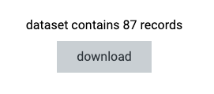
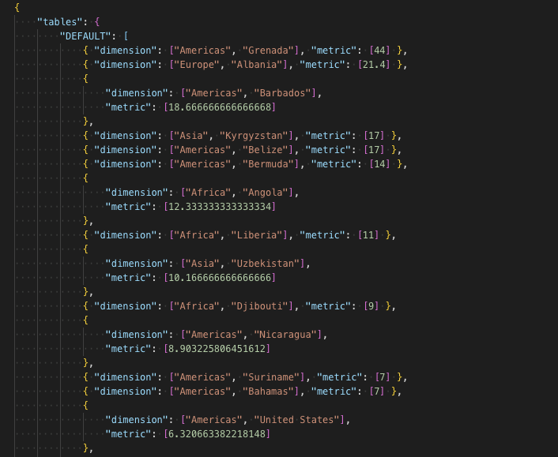
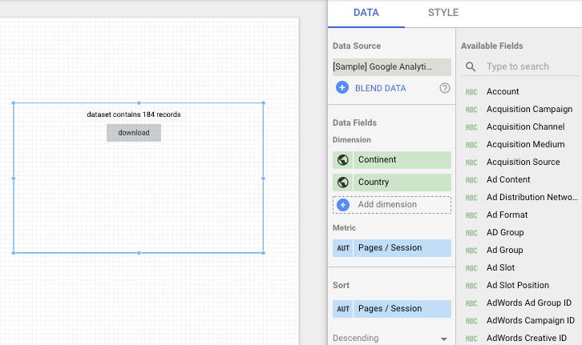
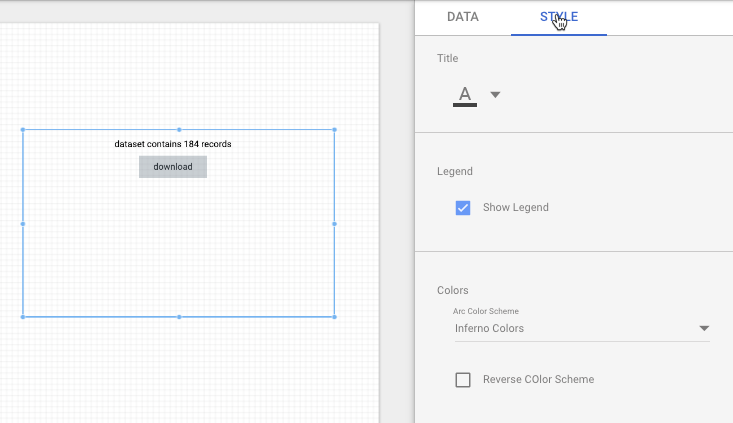
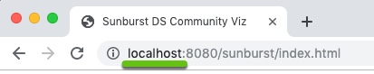
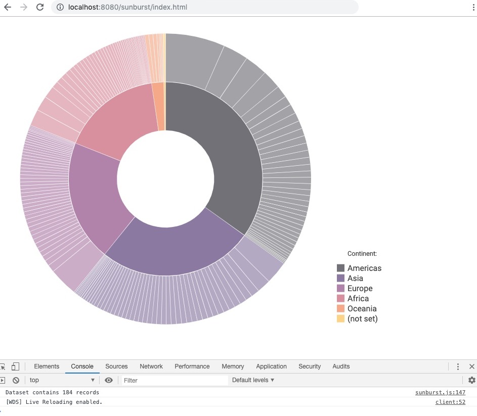
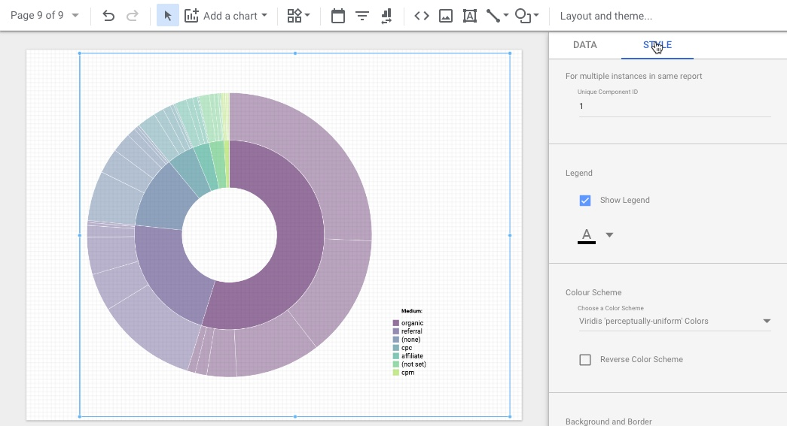

Last Updated: 2019-08-12
Data Studio Community Visualizations allow you to build and use your own custom visualizations in Data Studio. Throughout this document, we will call them "components".
This codelab will walk you through one configuration of a local development environment. Review the documentation to learn more about Community Visualizations.
This codelab assumes that you have completed the "Get Started" codelab.
You should also watch the following videos before starting this codelab.
npm installThe source code in the repo contains two components:
Both components can be found in the same repo:
These components use webpack and come with two commands:
npm run devnpm run buildThe npm run dev command starts the webpack server for local development. The npm run build command generates the files that you need to upload to your cloud environment to deploy your visualization.
Let's take a look at the files you just downloaded:
getData/js/ sunburst/ views/ dist/ This is the file structure of the sunburst-drilldown/ directory
├── README.md
├── getdata
│ ├── data
│ │ ├── DS-data-empty.json
│ │ └── DS-data.json
│ ├── getdata.js
│ ├── settings
│ │ ├── getdata.json
│ │ └── manifest.json
│ └── src
├── js
│ ├── d3-common.js
│ └── messages.js
├── package-lock.json
├── package.json
├── sunburst
│ ├── data
│ │ └── DS-data-documentation.json
│ ├── settings
│ │ ├── manifest.json
│ │ └── sunburst.json
│ ├── src
│ └── sunburst.js
├── views
└── webpack.config.jsThe purpose of the getdata component is to create multiple sample datasets with Data Studio to use in local development.
Having these datasets locally reduces development time and the likelihood of errors when you upload your component to Data Studio. These datasets make it easier to test requirements of different datasets.
Before deploying the component to Data Studio, run the component locally. To run the component, type the following command in your terminal:
npm run devOpen the following page in a browser:
http://localhost:8080/getdata/index.html
You should see:

sunburst/data/Use a text editor to open the downloaded file. You should see the following JSON:

The sample data follows the object format Data Studio provides.
The JSON contains 5 keys:
tablesfieldsstylesthemeinteractionsThis json file allows you to run the sunburst component in your local environment.
In the next section, we will briefly discuss the code included with this component.
Open the getdata/ folder:
├── getdata
│ ├── data
│ │ ├── DS-data-empty.json
│ │ └── DS-data.json
│ ├── getdata.js
│ ├── settings
│ │ ├── getdata.json
│ │ └── manifest.json
│ └── src
│ └── getdata.scssYou will see the following:
data/settings/ getdata.js For this exercise, do not change the config file.
Feel free to review the component source code.
npm run builddist/getdata to your Google Cloud Storage bucket.Once you have deployed the getdata component, add it to a Data Studio report.
In the data section of the property panel, add the dimension(s) and metric you'd like to visualize with your sunburst. For example: use the Google Analytics sample data source and add Continent and Country to "Dimension" and Pages / Session under "Metric"
The getdata component will show you the number of records in the returned data.

Make style selections in the property panel. For this component, select a title color, check the "Show Legend" checkbox, and choose a color scheme for the visualization.

Once you are done, switch to view mode. Click the download button from the displayed component and save the file as DS-data-documentation.json in the sunburst/data/ folder.
Once you have downloaded the data, switch back to edit mode, change your data and style selections, and download data files until you have covered enough edge cases.
You are now ready to test the sunburst component locally.
The file structure of the sunburst diagram is similar to the getdata component. There is one additional folder: src/. This folder contains the d3.js code for the diagram, as well as a SASS (CSS) styling file.
The code for the sunburst is provided without explanation, because the focus of this codelab is the local development workflow.
In the next step, we'll discuss the sunburst.js code, which is the bridge between the d3.js library and Data Studio.
├── sunburst
│ ├── data
│ │ └── DS-data-documentation.json
│ ├── settings
│ │ ├── manifest.json
│ │ └── sunburst.json
│ ├── src
│ │ ├── d3-sunburst.scss
│ │ ├── sunburst-data.js
│ │ ├── sunburst-dimensions.js
│ │ ├── sunburst-drawBase.js
│ │ ├── sunburst-drawContent.js
│ │ ├── sunburst-filter.js
│ │ ├── sunburst-legend.js
│ │ └── sunburst-obj.js
│ └── sunburst.jsIn this section we will go through the code in sunburst.js.
The two differences between rendering the chart in local and production environment are how data is loaded and how exceptions are rendered.
The code compares the hostname with the value of a variable called "LOCAL". Depending on this value production or development code is executed.
You will probably run the local preview using "localhost://". In that case, no code changes are needed.

If you are using 127.0.0.1 or any other domain name, please change the value of the LOCAL constant in the beginning of the script
const LOCAL = "localhost";
When developing locally, the component will try to load the dataset that we just downloaded with our getdata component. In production, it will use the ds-component library and subscribe to the data.
async function sunburst() {
if (window.location.hostname == LOCAL) {
const theDataSet = await d3.json("./data/DS-data.json");
draw(theDataSet);
} else {
dscc.subscribeToData(draw, { transform: dscc.objectTransform });
}
}There is one more difference between the local and the development code. In production, the component uses try/catch to render error messages. During local development, the component sends error messages to the console.
function draw(data) {
if (LOCAL) {
drawViz(data);
} else {
try {
drawViz(data);
} catch (err) {
renderErrorMessage(msg.errorTitle, `${msg.generalError} ${err}`);
}
}
}The d3 library expects the data as an array of objects, with dimensions and metrics combined. The order of the elements does not matter.
Format expected by D3.js:
[
{
"Continent": "Americas",
"Country": "Grenada",
"Pages / Session": 44
},
{
"Continent": "Europe",
"Country": "Albania",
"Pages / Session": 21.4
},
{
"Continent": "Americas",
"Country": "Barbados",
"Pages / Session": 18.66
}
]Object Format returned by Data Studio:
"DEFAULT": [
{
"dimension": ["Americas", "Grenada"],
"metric": [44] },
{
"dimension": ["Europe", "Albania"],
"metric": [21.4] },
{
"dimension": ["Americas", "Barbados"],
"metric": [18.66]
}
]To convert the data, we use the function convertData..
The convertData function does two other things:
Data Studio initially runs the script twice, first without any data, and then a second time with data.
In this example, the script only converts the data if it exists, and otherwise displays a message that the data is loading. If you pass an empty dataset to d3, it throws an exception and the user sees a system error message.
Data Studio renders custom components in the HTML body of an iFrame.
D3.js requires the id of the DOM object it selects. The prepareDOM() function ensures that the id of the body tag is set to "body".
const root = d3.select("body").attr("id", "body");The function also deletes all svg tags to avoid having multiple svg elements in the viz.
If the svg elements are not removed, new elements will be added with any resize event.
d3.select("body")
.selectAll("svg")
.remove();Finally we must remove the tooltip and error messages for the same reason.
d3.select("#error").remove();
d3.select("#tooltip").remove();D3.js expects the HTML elements for the tooltips to exist. In a website, we could simply create it in the HTML. However, because Data Studio does not give you direct access to the iframe DOM, we use d3.js.
function createTooltip(root) {
const tooltip = root
.append("div")
.attr("id", "tooltip")
.attr("class", "tooltip");
tooltip.append("span").attr("id", "title");
tooltip.append("span").attr("id", "count");
}You are almost ready to call our viz object with the function drawViz(rawData)
One last thing: Check if the chart area is big enough for your visualization. If not, display some kind of message.
getWidth() and getHeight() from the ds-component library does not work in the local setup. To check the chart area, I use my own script imported from /js/d3-common.js.
If convertData returns a data object, you can call
new Sunburst(id, data);id : The ID of the HTML tag where the viz should be created (in this case, "#body")data: the data object. Once a new sunburst object is created, we need to set properties of the object. For this visualization, the properties include:
// Dimensions and Metric of viz
sunburst.metricAccessor = rawData.fields.metric[0].name;
sunburst.dimensionsAccessor = [];
rawData.fields.dimension.forEach((d, i) => {
sunburst.dimensionsAccessor[i] = d.name;
});
// Color Scheme
sunburst.colorScheme = rawData.style.arcColors.value;
sunburst.colorSchemeReversed = rawData.style.colorSchemeReversed.value;
// Font Color
sunburst.fontColor = rawData.style.fontColor.value.color;
sunburst.fontOpacity = rawData.style.fontColor.value.opacity;
// Draw Legend
sunburst.legend = rawData.style.isLegend.value;
Once all properties are set, this function renders the viz:
sunburst.draw();Filter interactions are not covered in this codelab.
This visualization provides some error handling for common cases. Error messages are defined in the js/ folder.
The error messages also display an icon. The icon must be defined as a svg, because external images are blocked by the Community Visualizations CSP. To learn more, look at js/messages.js and the renderErrorMessage function in js/d3-common.js.
In your terminal, run:
npm run dev
Open your browser and navigate to:
http://localhost:8080/sunburst/index.html
You should see the sunburst diagram

If you are satisfied with the visualization, run:
npm run build
Then, deploy the the files from your dist/sunburst/ folder to your own bucket.
If all files are uploaded and set to public, and the manifest.json file is correctly configured, add your new component to a Data Studio report. You can select dimensions, metrics and style options.
The final result should look like this:

Now, you should be able to develop your own data visualizations locally and deploy them to Data Studio.